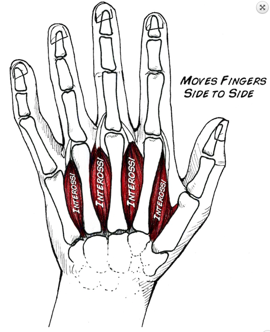
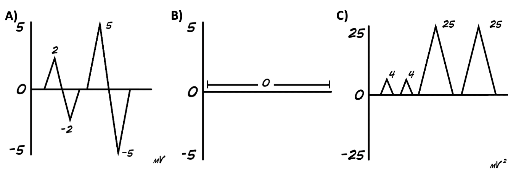

Lab Manual
Contents
Lab Manual¶
You will complete all of the Analysis (in Colab Data Explorer) and Responses for today with your partner during class as you work through the two sections below.
Software Setup¶
The output of the differential amplifiers are being sampled and digitized by the Nidaq ADC. Bonsai is set up to observe the Nidaq ADC output so that you can visualize and record these signals. The sampling rate is 30000 and the number of channels will depend on which experiment you are doing.
I. Movement Coding¶
To move your body, motor units join together in a systematic way to supply the force required to achieve strength. This teamwork among motor units is called “Orderly Recruitment”. In general, motor units with the smallest number of muscle fibers are recruited first. As more force is needed, motor units with larger number of fibers are recruited.
In this exploration, you will measure EMG signals from the first dorsal interossei muscle. Contraction of the first dorsal interosseous muscle causes lateral movement of the index finger toward the thumb. As you move this finger note the bulge beneath the skin where the main muscle contraction is ocurring. This bulge is the belly of the muscle.
{kind=link}
Place the reference electrode on the back of your hand.
You can try other locations to optimize noise. Just make sure it is not a region that will pick up signal from the muscle of interest and that it is not a region that will also be activated by the task.
Place the two differential measurement electrodes on the belly of the muscle. You can use the manual electrodes to optimize electrode placement.
Test the motor neuron activity under different movement force (weight lifting):
Rest the forearm comfortably in a “handshake” position at the edge of a table with your thumb relaxed and your fingers stacked.
Tie a string to an object and loop the string over the index finger (or put objects in a bag and loop the handles over your finger).
Lift the object with your index finger. Repeat for a total of 5 trials.
Repeat for a total of 3 different conditions with different lifted weight.
Think about what differences in motor unit (and/or population) amplitude you predict across conditions and why. Think about what differences in motor unit (and/or population) amplitude you predict across conditions and why.
To compare across conditions, record all of the conditions in the same raw data file.
Analysis and Results
Use the Colab Data Explorer (Part I. Motor Unit Coding and Recruitment) to analyze the rate and amplitude of motor unit spikes. Compare the EMG signal under these different object weight conditions.
What differences in motor unit spike rate and/or amplitude did you predict to observe across conditions?
What differences in motor unit spike rate and/or amplitude did you observe across conditions?
Save a copy of the Figure showing the median (and 95% confidence intervals) of peak rate and amplitude within each bout.
II. Fatigue¶
Hook up two EMG measurement electrodes to your bicep. Use the EMG reference electrode on the back of your palm from Parts I and II.
Stand with your back to a wall to control your posture and arm position.
Place a weight in your hand and hold it for as long as you can, with your elbow at a 90 degree angle (If your wrist gets fatigued before your bicept, you can hang the weight from your forearm).
This is called an “isometric” contraction since your muscles are working, but your joints are not moving.
Choose a weight load that you are comfortable maintaining between 15-120 seconds before load fatigue is too high. Keep the muscle active for as long as you can, even as you feel yourselves getting “weaker.”
Record your EMG during this task. Repeat the task with your partner (or have your partner repeat the task with a different muscle).
Root Mean Square (RMS)
RMS provides a measure of general signal strength (as opposed peak signal strength). RMS is calculated by squaring the signal, taking an average of the sum of squares, and then taking the square root. Seems mathematically excessive and unnecessary, so why do this?
First, it’s important to remember that our signal has positive and negative values (A). So if we were to try to take an average of this signal, we wouldn’t end up with much (B). However, we can get rid of the negative values by squaring the signal (C).
{kind=link}
Then we take the “sum of the squares” of the signal and divide it by the number of samples we took to get our mean (or average) value. Then you take the square root of your mean value to come up with the RMS.
A moving average RMS does this calculation within small windows that shift across the signal. This provides a (local) RMS estimate at each point in the signal.
Analysis and Results
Use the moving RMS calculation in the Colab Data Explorer (Part II. Fatigue).
For each raw data file (ie. for each condition/person):
Estimate and report the initial RMS value
Estimate and report the asymptotic RMS value (or the minimum value if an asymptote was not reached).
Estimate and report the time between the initial RMS and the asymptotic (or minimum) RMS.
Calculate and report the rate of fatigue (ie estimate the slope, \(m\), of the equation \(y = mx + b\) for the part of your moving RMS signal for which you observe increasing fatigue)
Note how linear your data is (or is not) in the range of increasing fatigue.
Save a copy of an example processed data signal, with the markers highlighting the initial RMS value.
Report these results in the form of a table (a template for the table is provided in the Responses Notebook).
Person |
Muscle |
initial RMS |
fatigued RMS |
time to fatigue |
rate of fatigue |
|---|---|---|---|---|---|
name 1 |
muscle id |
value (microV) |
value (microV) |
value (s) |
value (microV/s) |
name 2 |
muscle id |
value (microV) |
value (microV) |
value (s) |
value (microV/s) |
If you have time, compare the rate of fatigue for different muscles for one or both partners.